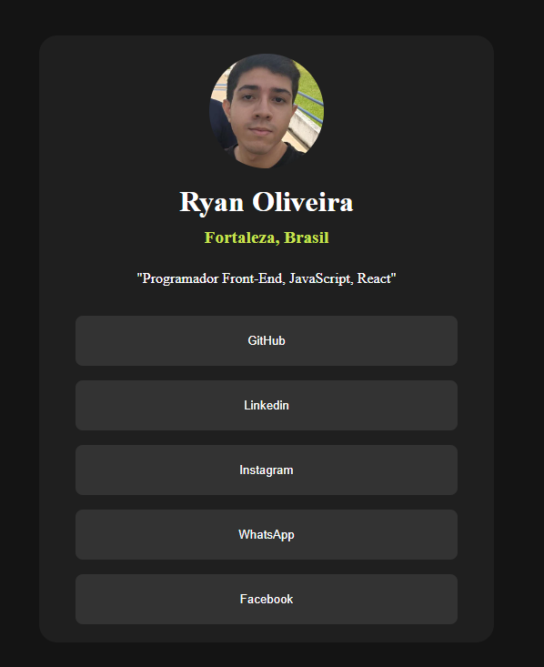
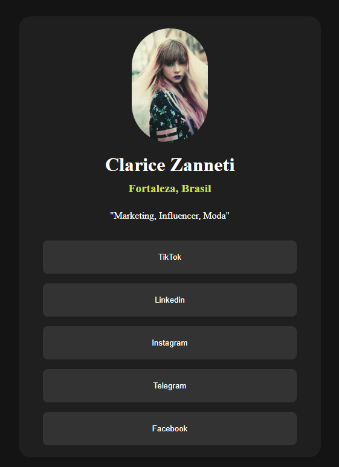

Estudante da Escola de programação "Infinity School" desenvolve projetos de "Link in Bio" para seus colegas de estudo.
"Ryan Oliveira" destaca-se na carreira de programador após realizar seus primeiros projetos freelancers dentro da escola de ensino "Infinity School".
Por Ryan's News CE
14/02/2024 02h46 Atualizado há 11 horas


Fotos escolhidas devido a direitos autorais - Foto: Divulgação
Após ter feito o desafio do site "Frontend Mentor", Ryan Oliveira supera seus limites e embarca em busca de novos aprendizados.
Segundo informações do programador, Ryan afirma: "Eu escutei algo que virou a chave para mim e deixou tudo bem mais claro em relação aos sites que eu fazia.